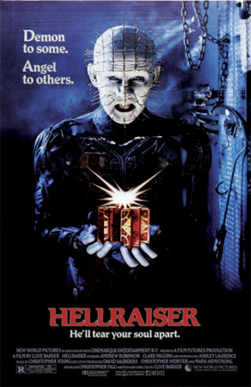

Hellraiser (1987)

Sinopse: Frank Cotton, um hedonista em busca do prazer supremo, abre uma misteriosa caixa que é, na verdade, um portal para outra dimensão. Ele é dilacerado pelos Cenobitas, criaturas sádicas lideradas por Pinhead, que vivem para explorar os limites da dor e do prazer. Anos depois, seu irmão Larry e sua esposa Julia se mudam para a antiga casa de Frank, e um acidente libera o espírito de Frank, que agora precisa de carne humana para se regenerar, levando Julia a uma série de atos macabros para ajudá-lo a escapar do inferno Cenobita.
Diretor: Clive Barker
Elenco Principal: Ashley Laurence (Kirsty Cotton), Andrew Robinson (Larry Cotton), Clare Higgins (Julia Cotton), Sean Chapman (Frank Cotton), Doug Bradley (Pinhead).
Bilheteria Mundial: Aproximadamente US$14.5 milhões
Curiosidades:
- Baseado na novela "The Hellbound Heart" do próprio Clive Barker, que também dirigiu e escreveu o roteiro.
- Introduziu o icônico Pinhead e os Cenobitas, figuras demoníacas que trazem "dor e prazer" indissociáveis.
- O filme é conhecido por seus temas de sadomasoquismo, depravação e exploração dos limites da experiência humana.
- Gerou uma vasta franquia com numerosas sequências, embora o original de Barker seja o mais aclamado.
- A Caixa de Lemarchand (ou Cubo de Lemarchand), o quebra-cabeça que invoca os Cenobitas, tornou-se um objeto reconhecível da cultura pop.